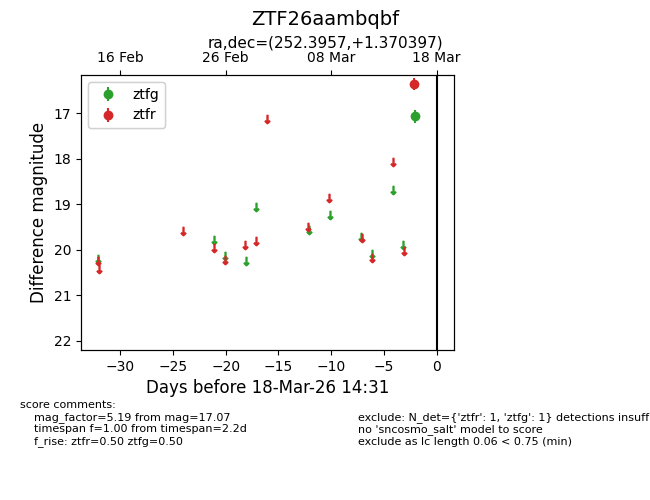
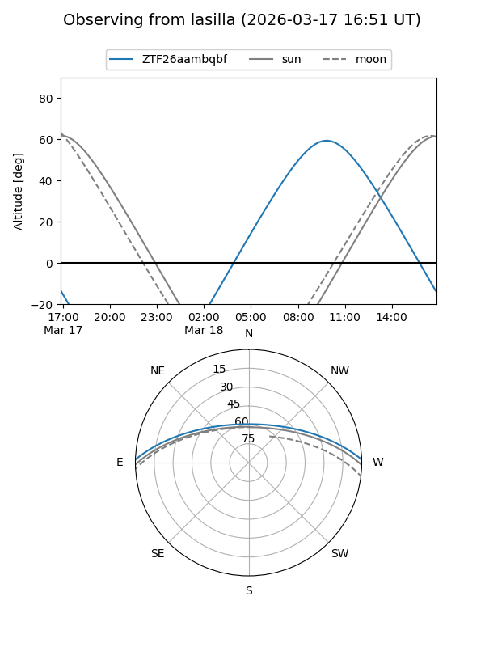
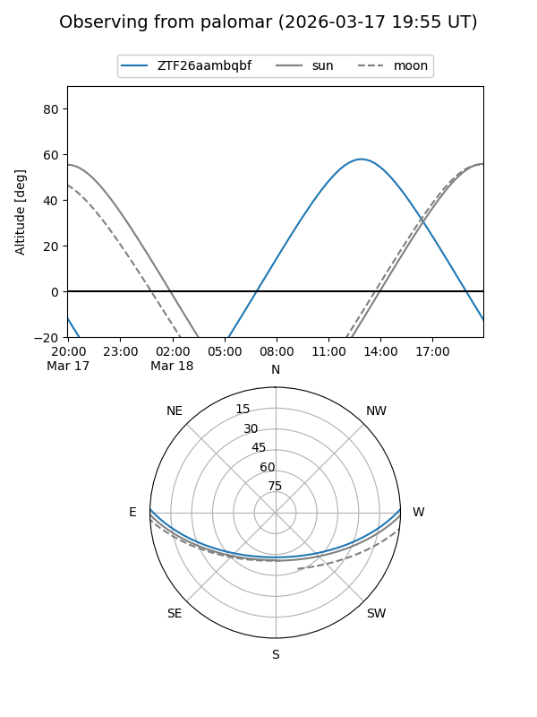

ZTF26aambqbf
Target ZTF26aambqbf at 2026-03-18 14:33
Aliases and brokers:
FINK: link
Lasair: link
ALeRCE: link
alt names
ZTF26aambqbf (ztf,fink_ztf)
Coordinates:
equatorial (ra, dec) = 252.3957,+1.37040
equatorial (HMS+DMS) = 16:49:34.97,+01:22:13.43
galactic (l, b) = (19.2464,+27.51588)
Flags:
Photometry:
last ztfg=17.07, ztfr=16.36
1 ztfg, 1 ztfr detections
Lightcurve

Visibility


Additional plots